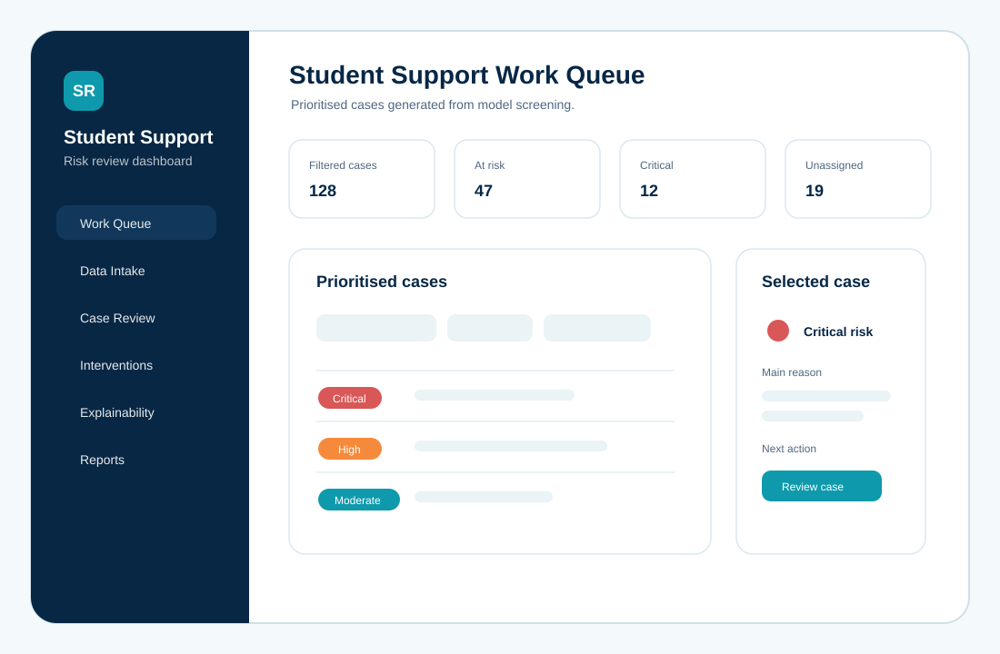
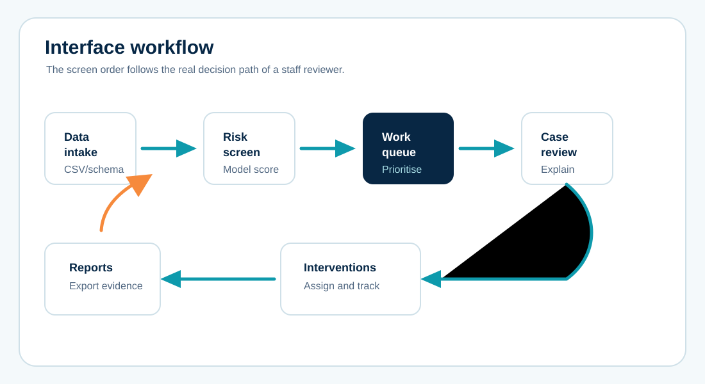
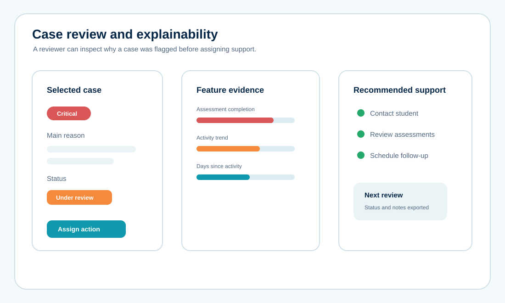
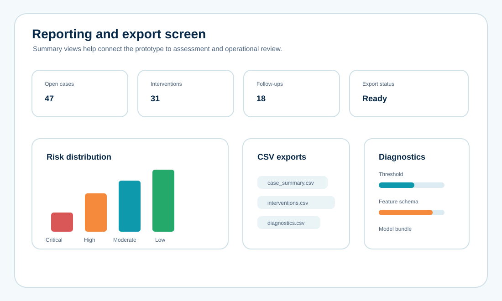

Student support dashboard for explainable risk review
A research web-interface project that turned student-risk model output into a staff-facing dashboard with data intake, prioritised work queue, case review, intervention tracking, explainability and exportable reports.

The Brief
The model could score risk, but the project needed an interface that made the result usable by a human reviewer.
The source application organised student records into a practical support workflow: upload or load demo data, screen students, prioritise at-risk cases, inspect explanations, assign interventions and export reports. The public version shown here recreates that interface logic without publishing raw records, identifiers or original screenshots.
The Interface Problem
A dashboard like this cannot be only attractive. It has to help staff decide what to do next.
Prioritisation
Critical, high, moderate and low-risk cases needed visible hierarchy, filters and readable case tables.
Traceability
Each case needed explainability evidence so the reviewer could see why the student was flagged.
Operational flow
The interface needed to support assignment, follow-up status, intervention records and exportable reporting.
User Flow

Staff upload records or use a demonstration dataset with a known schema.
The system scores each record and assigns a risk band from low to critical.
Staff inspect case reasons, feature contributions and recommended support actions.
Intervention status and case summaries can be exported for follow-up and review.
Screen Evidence
The interface was shaped around repeated review work: scan the queue, open a case, understand the risk drivers, assign action and export evidence.


Outcome
The finished interface made the research prototype easier to demonstrate because model output became an organised staff workflow.
This case study is a recreated public version. Raw student records, private datasets, local paths, project-owner names and original screenshots are not published.
Need a dashboard or web interface for a project?
Send the project goal, users, available data or API status, required screens, deadline and whether the site should be static or interactive.